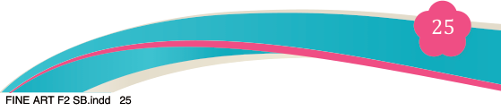
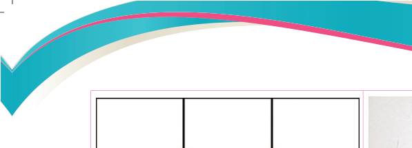
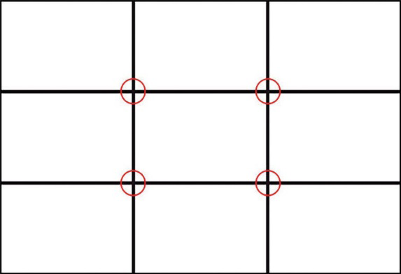
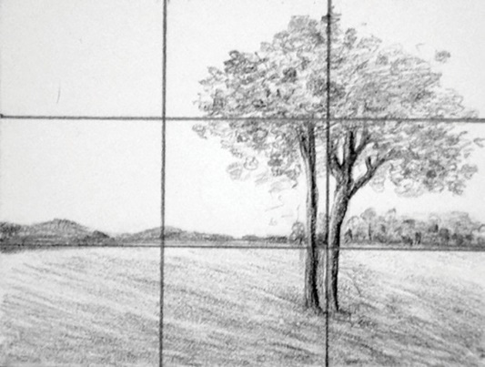
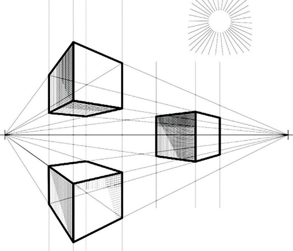

<!DOCTYPE html>
<html lang="en">

<head>
    <meta charset="utf-8" />
    <meta name="viewport" content="width=558, height=768" />
    <title>Fine Art for Secondary Schools</title>
    <meta name="title-id" content="pg031_sec001" />
    <meta name="page-section-id" content="31" />
    <link href="./content/tailwind_output.css" rel="stylesheet">
    <link href="./assets/libs/fontawesome/css/all.min.css" rel="stylesheet">
    <link href="./assets/fonts.css" rel="stylesheet">
    <link rel="preconnect" href="https://fonts.googleapis.com">
    <link rel="preconnect" href="https://fonts.gstatic.com" crossorigin>
    <link href="https://fonts.googleapis.com/css2?family=Caladea&amp;family=Tinos&amp;display=swap" rel="stylesheet">
    <style>
      html { width: 100%; height: 100%; background: #e5e7eb; }
      body { background: #e5e7eb; }
      #content {
        visibility: hidden;
        background: #fff;
        outline: 1px solid rgba(15, 23, 42, 0.28);
        box-shadow: 0 10px 30px rgba(15, 23, 42, 0.22);
      }
    </style>
    <noscript><style>#content { visibility: visible !important; }</style></noscript>
</head>

<body style="margin:0;overflow:hidden;width:100%;height:100%">
    <main>
      <div id="content" data-fl-reference-width="558" style="position:relative;width:558px;height:768px;margin:0 auto;overflow:hidden">
  
  
  
  
  
  
  
  <p data-id="pg031_p000" data-adt-raster-text="1" role="presentation" aria-hidden="true" data-segments="[{&quot;text&quot;:&quot;Fine Art for Secondary Schools&quot;,&quot;style&quot;:{&quot;font-family&quot;:&quot;Caladea,Merriweather,serif&quot;,&quot;font-size&quot;:&quot;9px&quot;,&quot;color&quot;:&quot;#231f20&quot;}}]" data-adt-fit="1" style="position:absolute;z-index:2;top:49px;left:344px;line-height:9px;width:120px;height:9px;white-space:nowrap;opacity:0"><span style="font-family:Caladea,Merriweather,serif;font-size:9px;color:#231f20">Fine Art for Secondary Schools</span></p>
  
  <p data-id="pg031_p001" data-adt-raster-text="1" role="presentation" aria-hidden="true" data-segments="[{&quot;text&quot;:&quot;25&quot;,&quot;style&quot;:{&quot;font-family&quot;:&quot;Caladea,Merriweather,serif&quot;,&quot;font-size&quot;:&quot;12px&quot;,&quot;color&quot;:&quot;#ffffff&quot;}}]" data-adt-fit="1" style="position:absolute;z-index:2;top:704px;left:277px;line-height:12px;width:1px;height:12px;white-space:nowrap;opacity:0"><span style="font-family:Caladea,Merriweather,serif;font-size:12px;color:#ffffff">25</span></p>
  
  
  
  <p data-id="pg031_p002" data-adt-raster-text="1" role="presentation" aria-hidden="true" data-segments="[{&quot;text&quot;:&quot;Student&#x2019;s Book&quot;,&quot;style&quot;:{&quot;font-family&quot;:&quot;Tinos,&apos;Times New Roman&apos;,Times,Merriweather,serif&quot;,&quot;font-size&quot;:&quot;9px&quot;,&quot;color&quot;:&quot;#231f20&quot;}},{&quot;text&quot;:&quot; Form &quot;,&quot;style&quot;:{&quot;font-family&quot;:&quot;Tinos,&apos;Times New Roman&apos;,Times,Merriweather,serif&quot;,&quot;font-size&quot;:&quot;9px&quot;,&quot;color&quot;:&quot;#231f20&quot;,&quot;font-weight&quot;:&quot;bold&quot;}},{&quot;text&quot;:&quot;Two&quot;,&quot;style&quot;:{&quot;font-family&quot;:&quot;Tinos,&apos;Times New Roman&apos;,Times,Merriweather,serif&quot;,&quot;font-size&quot;:&quot;9px&quot;,&quot;color&quot;:&quot;#231f20&quot;,&quot;font-weight&quot;:&quot;bold&quot;,&quot;font-style&quot;:&quot;italic&quot;}}]" data-adt-fit="1" style="position:absolute;z-index:2;top:703px;left:365px;line-height:9px;width:97px;height:12px;white-space:nowrap;opacity:0"><span style="font-family:Tinos,&apos;Times New Roman&apos;,Times,Merriweather,serif;font-size:9px;color:#231f20">Student&#x2019;s Book</span><span style="font-family:Tinos,&apos;Times New Roman&apos;,Times,Merriweather,serif;font-size:9px;color:#231f20;font-weight:bold"> Form </span><span style="font-family:Tinos,&apos;Times New Roman&apos;,Times,Merriweather,serif;font-size:9px;color:#231f20;font-weight:bold;font-style:italic">Two</span></p>
  
  
  
  <p data-id="pg031_p003" data-adt-reading-order="11" data-segments="[{&quot;text&quot;:&quot;(a)&quot;,&quot;style&quot;:{&quot;font-family&quot;:&quot;Tinos,&apos;Times New Roman&apos;,Times,Merriweather,serif&quot;,&quot;font-size&quot;:&quot;10px&quot;,&quot;color&quot;:&quot;#231f20&quot;,&quot;font-weight&quot;:&quot;bold&quot;}}]" data-adt-fit="1" style="position:absolute;z-index:2;top:226px;left:178px;line-height:10px;width:76px;height:16px;white-space:nowrap"><span style="font-family:Tinos,&apos;Times New Roman&apos;,Times,Merriweather,serif;font-size:10px;color:#231f20;font-weight:bold">(a)</span></p>
  <p data-id="pg031_p004" data-adt-reading-order="13" data-segments="[{&quot;text&quot;:&quot;Source: \u0007&quot;,&quot;style&quot;:{&quot;font-family&quot;:&quot;Tinos,&apos;Times New Roman&apos;,Times,Merriweather,serif&quot;,&quot;font-size&quot;:&quot;10px&quot;,&quot;color&quot;:&quot;#231f20&quot;,&quot;font-weight&quot;:&quot;bold&quot;}},{&quot;text&quot;:&quot;http://www.austadpro.com/blog/\n&quot;,&quot;style&quot;:{&quot;font-family&quot;:&quot;Tinos,&apos;Times New Roman&apos;,Times,Merriweather,serif&quot;,&quot;font-size&quot;:&quot;10px&quot;,&quot;color&quot;:&quot;#231f20&quot;,&quot;font-style&quot;:&quot;italic&quot;}},{&quot;text&quot;:&quot;composition-rule-of-thirds/&quot;,&quot;style&quot;:{&quot;font-family&quot;:&quot;Tinos,&apos;Times New Roman&apos;,Times,Merriweather,serif&quot;,&quot;font-size&quot;:&quot;10px&quot;,&quot;color&quot;:&quot;#231f20&quot;,&quot;font-style&quot;:&quot;italic&quot;}}]" data-adt-fit="1" style="position:absolute;z-index:2;top:242px;left:90px;line-height:10px;width:164px;height:30px;white-space:pre"><span style="font-family:Tinos,&apos;Times New Roman&apos;,Times,Merriweather,serif;font-size:10px;color:#231f20;font-weight:bold">Source: </span><span style="font-family:Tinos,&apos;Times New Roman&apos;,Times,Merriweather,serif;font-size:10px;color:#231f20;font-style:italic">http://www.austadpro.com/blog/
</span><span style="font-family:Tinos,&apos;Times New Roman&apos;,Times,Merriweather,serif;font-size:10px;color:#231f20;font-style:italic">composition-rule-of-thirds/</span></p>
  <p data-id="pg031_p006" data-adt-reading-order="12" data-segments="[{&quot;text&quot;:&quot;(b)&quot;,&quot;style&quot;:{&quot;font-family&quot;:&quot;Tinos,&apos;Times New Roman&apos;,Times,Merriweather,serif&quot;,&quot;font-size&quot;:&quot;10px&quot;,&quot;color&quot;:&quot;#231f20&quot;,&quot;font-weight&quot;:&quot;bold&quot;}}]" data-adt-fit="1" style="position:absolute;z-index:2;top:226px;left:360px;line-height:10px;width:82px;height:16px;white-space:nowrap"><span style="font-family:Tinos,&apos;Times New Roman&apos;,Times,Merriweather,serif;font-size:10px;color:#231f20;font-weight:bold">(b)</span></p>
  <p data-id="pg031_p007" data-adt-reading-order="14" data-segments="[{&quot;text&quot;:&quot;Source \u0007&quot;,&quot;style&quot;:{&quot;font-family&quot;:&quot;Tinos,&apos;Times New Roman&apos;,Times,Merriweather,serif&quot;,&quot;font-size&quot;:&quot;10px&quot;,&quot;color&quot;:&quot;#231f20&quot;,&quot;font-weight&quot;:&quot;bold&quot;}},{&quot;text&quot;:&quot;http://eddiesitinerantpencil.\n&quot;,&quot;style&quot;:{&quot;font-family&quot;:&quot;Tinos,&apos;Times New Roman&apos;,Times,Merriweather,serif&quot;,&quot;font-size&quot;:&quot;10px&quot;,&quot;color&quot;:&quot;#007c91&quot;,&quot;font-style&quot;:&quot;italic&quot;}},{&quot;text&quot;:&quot;blog pot.&quot;,&quot;style&quot;:{&quot;font-family&quot;:&quot;Tinos,&apos;Times New Roman&apos;,Times,Merriweather,serif&quot;,&quot;font-size&quot;:&quot;10px&quot;,&quot;color&quot;:&quot;#007c91&quot;,&quot;font-style&quot;:&quot;italic&quot;}},{&quot;text&quot;:&quot;com/2013/06/tutorial-\n&quot;,&quot;style&quot;:{&quot;font-family&quot;:&quot;Tinos,&apos;Times New Roman&apos;,Times,Merriweather,serif&quot;,&quot;font-size&quot;:&quot;10px&quot;,&quot;color&quot;:&quot;#231f20&quot;,&quot;font-style&quot;:&quot;italic&quot;}},{&quot;text&quot;:&quot;some-tips-on- composition.html&quot;,&quot;style&quot;:{&quot;font-family&quot;:&quot;Tinos,&apos;Times New Roman&apos;,Times,Merriweather,serif&quot;,&quot;font-size&quot;:&quot;10px&quot;,&quot;color&quot;:&quot;#231f20&quot;,&quot;font-style&quot;:&quot;italic&quot;}}]" data-adt-fit="1" style="position:absolute;z-index:2;top:242px;left:288px;line-height:10px;width:154px;height:47px;white-space:pre"><span style="font-family:Tinos,&apos;Times New Roman&apos;,Times,Merriweather,serif;font-size:10px;color:#231f20;font-weight:bold">Source </span><span style="font-family:Tinos,&apos;Times New Roman&apos;,Times,Merriweather,serif;font-size:10px;color:#007c91;font-style:italic">http://eddiesitinerantpencil.
</span><span style="font-family:Tinos,&apos;Times New Roman&apos;,Times,Merriweather,serif;font-size:10px;color:#007c91;font-style:italic">blog pot.</span><span style="font-family:Tinos,&apos;Times New Roman&apos;,Times,Merriweather,serif;font-size:10px;color:#231f20;font-style:italic">com/2013/06/tutorial-
</span><span style="font-family:Tinos,&apos;Times New Roman&apos;,Times,Merriweather,serif;font-size:10px;color:#231f20;font-style:italic">some-tips-on- composition.html</span></p>
  <p data-id="pg031_p010" data-adt-reading-order="15" data-segments="[{&quot;text&quot;:&quot;Figure 2.6 (a-b): &quot;,&quot;style&quot;:{&quot;font-family&quot;:&quot;Tinos,&apos;Times New Roman&apos;,Times,Merriweather,serif&quot;,&quot;font-size&quot;:&quot;10px&quot;,&quot;color&quot;:&quot;#231f20&quot;,&quot;font-weight&quot;:&quot;bold&quot;}},{&quot;text&quot;:&quot;The rule of thirds&quot;,&quot;style&quot;:{&quot;font-family&quot;:&quot;Tinos,&apos;Times New Roman&apos;,Times,Merriweather,serif&quot;,&quot;font-size&quot;:&quot;10px&quot;,&quot;color&quot;:&quot;#231f20&quot;,&quot;font-style&quot;:&quot;italic&quot;}}]" data-adt-fit="1" style="position:absolute;z-index:2;top:289px;left:208px;line-height:10px;width:70px;height:13px;white-space:nowrap"><span style="font-family:Tinos,&apos;Times New Roman&apos;,Times,Merriweather,serif;font-size:10px;color:#231f20;font-weight:bold">Figure 2.6 (a-b): </span><span style="font-family:Tinos,&apos;Times New Roman&apos;,Times,Merriweather,serif;font-size:10px;color:#231f20;font-style:italic">The rule of thirds</span></p>
  <p data-id="pg031_p011" data-adt-reading-order="16" data-segments="[{&quot;text&quot;:&quot;(d) Perspective and space&quot;,&quot;style&quot;:{&quot;font-family&quot;:&quot;Tinos,&apos;Times New Roman&apos;,Times,Merriweather,serif&quot;,&quot;font-size&quot;:&quot;12px&quot;,&quot;color&quot;:&quot;#231f20&quot;,&quot;font-weight&quot;:&quot;bold&quot;}}]" data-adt-fit="1" style="position:absolute;z-index:2;top:309px;left:86px;line-height:12px;width:192px;height:17px;white-space:nowrap"><span style="font-family:Tinos,&apos;Times New Roman&apos;,Times,Merriweather,serif;font-size:12px;color:#231f20;font-weight:bold">(d) Perspective and space</span></p>
  <p data-id="pg031_p012" data-adt-reading-order="17" data-segments="[{&quot;text&quot;:&quot;Perspective and space is a way of placing an object in the space by consid&#xad;\n&quot;,&quot;style&quot;:{&quot;font-family&quot;:&quot;Tinos,&apos;Times New Roman&apos;,Times,Merriweather,serif&quot;,&quot;font-size&quot;:&quot;12px&quot;,&quot;color&quot;:&quot;#231f20&quot;}},{&quot;text&quot;:&quot;ering perspective rules. If the objects are under the eye level/horizon line,\n&quot;,&quot;style&quot;:{&quot;font-family&quot;:&quot;Tinos,&apos;Times New Roman&apos;,Times,Merriweather,serif&quot;,&quot;font-size&quot;:&quot;12px&quot;,&quot;color&quot;:&quot;#231f20&quot;}},{&quot;text&quot;:&quot;then their tops will be visible to the viewer and if the objects are centred\n&quot;,&quot;style&quot;:{&quot;font-family&quot;:&quot;Tinos,&apos;Times New Roman&apos;,Times,Merriweather,serif&quot;,&quot;font-size&quot;:&quot;12px&quot;,&quot;color&quot;:&quot;#231f20&quot;}},{&quot;text&quot;:&quot;by the horizon line, then neither their top nor bottom will be visible. When the\n&quot;,&quot;style&quot;:{&quot;font-family&quot;:&quot;Tinos,&apos;Times New Roman&apos;,Times,Merriweather,serif&quot;,&quot;font-size&quot;:&quot;12px&quot;,&quot;color&quot;:&quot;#231f20&quot;}},{&quot;text&quot;:&quot;objects are over the eye level, only their top will be visible. Observe the\n&quot;,&quot;style&quot;:{&quot;font-family&quot;:&quot;Tinos,&apos;Times New Roman&apos;,Times,Merriweather,serif&quot;,&quot;font-size&quot;:&quot;12px&quot;,&quot;color&quot;:&quot;#231f20&quot;}},{&quot;text&quot;:&quot;illustration in Figure 2.7.&quot;,&quot;style&quot;:{&quot;font-family&quot;:&quot;Tinos,&apos;Times New Roman&apos;,Times,Merriweather,serif&quot;,&quot;font-size&quot;:&quot;12px&quot;,&quot;color&quot;:&quot;#231f20&quot;}}]" data-adt-fit="1" style="position:absolute;z-index:2;top:326px;left:86px;line-height:12px;width:192px;height:88px;white-space:pre"><span style="font-family:Tinos,&apos;Times New Roman&apos;,Times,Merriweather,serif;font-size:12px;color:#231f20">Perspective and space is a way of placing an object in the space by consid&#xad;
</span><span style="font-family:Tinos,&apos;Times New Roman&apos;,Times,Merriweather,serif;font-size:12px;color:#231f20">ering perspective rules. If the objects are under the eye level/horizon line,
</span><span style="font-family:Tinos,&apos;Times New Roman&apos;,Times,Merriweather,serif;font-size:12px;color:#231f20">then their tops will be visible to the viewer and if the objects are centred
</span><span style="font-family:Tinos,&apos;Times New Roman&apos;,Times,Merriweather,serif;font-size:12px;color:#231f20">by the horizon line, then neither their top nor bottom will be visible. When the
</span><span style="font-family:Tinos,&apos;Times New Roman&apos;,Times,Merriweather,serif;font-size:12px;color:#231f20">objects are over the eye level, only their top will be visible. Observe the
</span><span style="font-family:Tinos,&apos;Times New Roman&apos;,Times,Merriweather,serif;font-size:12px;color:#231f20">illustration in Figure 2.7.</span></p>
  
  <p data-id="pg031_p018" data-adt-reading-order="19" data-segments="[{&quot;text&quot;:&quot;Figure 2.7: &quot;,&quot;style&quot;:{&quot;font-family&quot;:&quot;Tinos,&apos;Times New Roman&apos;,Times,Merriweather,serif&quot;,&quot;font-size&quot;:&quot;10px&quot;,&quot;color&quot;:&quot;#231f20&quot;,&quot;font-weight&quot;:&quot;bold&quot;}},{&quot;text&quot;:&quot;Perspective and space&quot;,&quot;style&quot;:{&quot;font-family&quot;:&quot;Tinos,&apos;Times New Roman&apos;,Times,Merriweather,serif&quot;,&quot;font-size&quot;:&quot;10px&quot;,&quot;color&quot;:&quot;#231f20&quot;,&quot;font-style&quot;:&quot;italic&quot;}}]" data-adt-fit="1" style="position:absolute;z-index:2;top:651px;left:95px;line-height:10px;width:183px;height:16px;text-align:center;white-space:nowrap"><span style="font-family:Tinos,&apos;Times New Roman&apos;,Times,Merriweather,serif;font-size:10px;color:#231f20;font-weight:bold">Figure 2.7: </span><span style="font-family:Tinos,&apos;Times New Roman&apos;,Times,Merriweather,serif;font-size:10px;color:#231f20;font-style:italic">Perspective and space</span></p>
  <p data-id="pg031_p019" data-adt-reading-order="23" data-segments="[{&quot;text&quot;:&quot;Source: &quot;,&quot;style&quot;:{&quot;font-family&quot;:&quot;Tinos,&apos;Times New Roman&apos;,Times,Merriweather,serif&quot;,&quot;font-size&quot;:&quot;10px&quot;,&quot;color&quot;:&quot;#231f20&quot;,&quot;font-weight&quot;:&quot;bold&quot;}},{&quot;text&quot;:&quot;https://www.blackdogartsupply.ca/workshops/drawing-with-perspective-n3rbh-8s9tk&quot;,&quot;style&quot;:{&quot;font-family&quot;:&quot;Tinos,&apos;Times New Roman&apos;,Times,Merriweather,serif&quot;,&quot;font-size&quot;:&quot;10px&quot;,&quot;color&quot;:&quot;#231f20&quot;,&quot;font-style&quot;:&quot;italic&quot;}}]" data-adt-fit="1" style="position:absolute;z-index:2;top:667px;left:95px;line-height:10px;width:183px;height:14px;text-align:center;white-space:nowrap"><span style="font-family:Tinos,&apos;Times New Roman&apos;,Times,Merriweather,serif;font-size:10px;color:#231f20;font-weight:bold">Source: </span><span style="font-family:Tinos,&apos;Times New Roman&apos;,Times,Merriweather,serif;font-size:10px;color:#231f20;font-style:italic">https://www.blackdogartsupply.ca/workshops/drawing-with-perspective-n3rbh-8s9tk</span></p>
<script src="./assets/auto-fit.js"></script>
</div>
    </main>
    <script>
      (function () {
        var c = document.getElementById("content");
        if (!c) return;
        var W = parseFloat(c.style.width) || c.offsetWidth || 1;
        var H = parseFloat(c.style.height) || c.offsetHeight || 1;
        var ref = parseFloat(c.getAttribute("data-fl-reference-width"));
        var refW = ref > 0 ? ref : W;
        var FALLBACK = 96;
        function dock() {
          var v = parseFloat(getComputedStyle(document.documentElement).getPropertyValue("--dock-height"));
          return v > 0 ? v : FALLBACK;
        }
        function fit() {
          var DOCK = dock();
          var byW = window.innerWidth / refW;
          var byH = (window.innerHeight - DOCK) / H;
          var s = Math.min(2, byW, byH > 0 ? byH : byW);
          c.style.position = "absolute";
          c.style.left = "50%";
          c.style.top = "calc((100% - " + DOCK + "px) / 2)";
          c.style.margin = "0";
          c.style.transformOrigin = "center center";
          c.style.transform = "translate(-50%, -50%) scale(" + s + ")";
          c.style.visibility = "visible";
        }
        fit();
        window.addEventListener("resize", fit);
        window.addEventListener("load", fit);
        window.addEventListener("adt:dock-resize", fit);
      })();
    </script>

    <div class="relative z-50" id="interface-container"></div>
    <div class="relative z-50" id="nav-container"></div>
    <script src="./assets/offline-preloader.js"></script>
    <script src="./assets/scorm.js"></script>
    <script src="./assets/base.bundle.local.js"></script>
</body>

</html>
